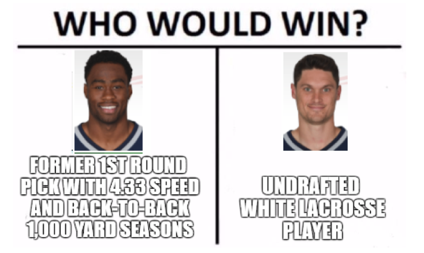

League of Extraordinary Gypsies Power Rankings
Because trash talk is better with stats to back it up.
COMMISH'S CORNER: WEEK 2 RECAP
—Chris Pom
When One Jamie Isn't Enough — Brian vs Reeding Rainbow — Stuart
Woof. What a bloodbath. The good news: Tarik Cohen, he of $62 FAAB infamy, was Stuart's best non-QB player! The bad news: that was because every single other player scored "alternative points." As in, an alternative to winning.
The cherry on top was the absolute ravaging Stuart suffered to his tight ends. First Stuart grimaced as a broken foot destroyed his tight end, followed by a brutal contusion square in the middle of his tight end. I wouldn't wish this kind of fate on my worst enemy's tight end. This coming week is sure to be quite the sore spot for Stuart's tight end, as he scrambles to find a suitable stud to fill the hole.
Brian, on the other hand, turned doom and gloom into BOOM and ... also BOOM. His team burst forth from the fantasy football graveyard, putting forth the top points of this week. Only Martellus Bennett and Mason Crosby failed to reach double-digits; a fitting tribute to the Packers' week. That this pointpocalypse occurred with Le'Veon Bell only posting a mediocre 13.1 points should put fear into all of our hearts.
Brian will hope to smoke Meff this week while Stuart will cross duck penii with BFF Ryne.
Mr and Mrs Meffin Top!! — Meff vs Tiki's Torches
Tiki got torched, and badly; my starting RBs and WRs combined for 21.3 points, less than two of Meff's individual players. Kelce's frankly pathetic attempts to imitate every aspect of Gronk's life paid off this week as he surpassed his mentor by a tiny but, but that was the only bright point for my skill position players.
Anyways,
The bottom half of Meff's roster just toasted me. If Hogan continues to outscore Cooks I'm getting the fucking NAACP on the horn because if this isn't blatant racial discrimination I'm not sure what is. Meff's RB situation looks pretty dicey but if the WRs keep it up who cares.
I hope Adam's into some weird shit because I'm unleashing a gaggle of world-class athletes on Monica's butt this week, and Meff will be playing Brian as previously noted.
Rock of Gibraltar — JP vs WHITE LIVES MATTER — Monica
Things have gone from bad to worse in Monicaland, with PJ pooping all over her team last week. There really isn't a single redeeming quality about this roster; everyone looks terrible right now, and the rest are hurt or suspended. Monica reached peak Inception by lighting money on fire within the game that she lit money on fire to play in the first place, as it turns out Kerwynn Williams is as good at being a running back as he is at having a not-stupid name.
JP managed to survive his blind loyalty to Jimmy Graham this week thanks to many great performances elsewhere, though he missed a golden opportunity to beat Monica with her team's own namesake. I'm sure he was expecting fuck-billion points from both Matt Ryan and Devonta Freeman vs the Packers, and while Ryan wasn't the best Freeman more than made up for it. When JP trades Josh Gordon for Ryne's entire team, we might be in even bigger trouble.
JP fights fellow former fedora fashionista Adam this weekend, and as mentioned Monica will lose to Chris.
Lordy I hope there are tapas — Ryne vs WHY AM I YELLING — Jordan
It's like if Peter punched Jesus right in his stupid face; the disciple became the master this week with Ryne crucifying his One True God proving that all's fair in fantasy football. This one was decently close, with the defenses playing a major role in deciding the outcome because that's real fucking neato.
Both teams got less than stellar games from their top wideouts, but I fucking hope to Jordan that Martavis Bryant isn't about to break about because you know Ryne will be a big smug douche about it. How fitting to have Russell Wilson as his quarterback.
From Jordan's side of things, maybe a new OC in Cincy will spice up AJ Green, but if Ajayi is seriously hurt he's kinda fuuuuuuuuuuuuuuuuuucked. I bet the swing from 29 points to -1 points is sitting really well because boy isn't roulette a fun and exciting game you guys?
It's Cain and Abel time as Jordan matches up against his ... brother, and Ryne quack quack Stuart quack.
My Johnson Is Broken — Steve vs Dab City — Adam
I don't even want to talk about this game. Adam lost to Steve starting LeGarrette Blount. Steve won starting LeGarrette Blount. You are both bad and should feel bad.
Week 3 Power Rankings
| # | Owner | Record | Power | LSQ | 2SD | Colley | SOS | Luck | Tier |
|---|---|---|---|---|---|---|---|---|---|
| 1 | Steve Kamke 4 | 2-0 | 97.296 | 0.939 | 2.143 | 0.772 | 1.128 | 1.549 | 1 |
| 2 | John Cronin 2 | 2-0 | 97.052 | 0.939 | 1.964 | 0.711 | 0.935 | 1.247 | 1 |
| 3 | Meff Shulz 3 | 1-1 | 93.783 | 0.897 | 1.250 | 0.537 | 1.040 | 0.940 | 2 |
| 4 | Ryne Carbone 3 | 1-1 | 93.475 | 0.923 | 1.250 | 0.568 | 1.140 | 1.031 | 2 |
| 5 | Jordan Hardy 2 | 1-1 | 90.498 | 0.883 | 0.893 | 0.499 | 1.030 | 1.040 | 3 |
| 6 | Adam Kachelski 5 | 1-1 | 89.757 | 0.883 | 0.714 | 0.520 | 0.972 | 0.906 | 3 |
| 7 | Brian Kohlman 3 | 1-1 | 89.414 | 0.737 | 1.071 | 0.429 | 0.827 | 1.019 | 3 |
| 8 | Chris Pom 6 | 1-1 | 88.763 | 0.730 | 0.714 | 0.439 | 0.841 | 0.780 | 3 |
| 9 | Monica Cooley | 0-2 | 77.095 | 0.607 | 0.000 | 0.308 | 1.140 | 0.482 | 4 |
| 10 | Stuart Frazier 2 | 0-2 | 70.219 | 0.380 | 0.000 | 0.217 | 0.881 | 0.461 | 5 |
Metrics
| Power | Final weighted combination of the other metrics |
| LSQ | Iterative Least Square minimization, comparing ranking difference to score outcome, many factors included, see description |
| 2SD | Two step dominance matrix, recency weighting |
| Colley | Colley matrix ranking, only factors outcome |
| SOS | Relative strength of schedule, scaled to average schedule |
| Luck | Luck index, factors opponents score and aggregrate wins |
| Tier | Clustering by finding minima in Gaussian Kernel Density Estimation |